АРТМАКЕТ / Портфолио
Проекты
в масштабе.
Аэропорты, городские комплексы и отдельные здания.
Настоящие работы мастерской —
от общей композиции до деталей.
Показаны все работы: 14
 Рассмотреть
Рассмотреть

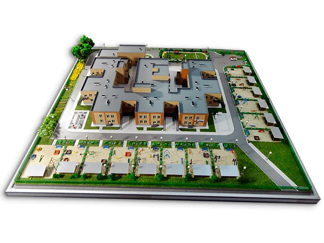
Рассмотреть
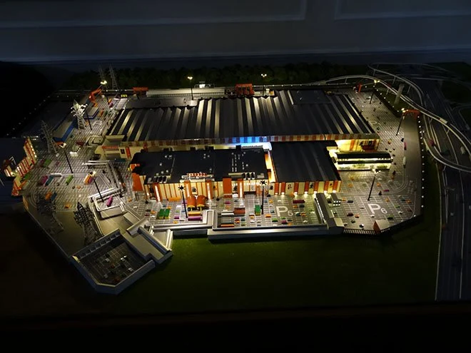
Рассмотреть
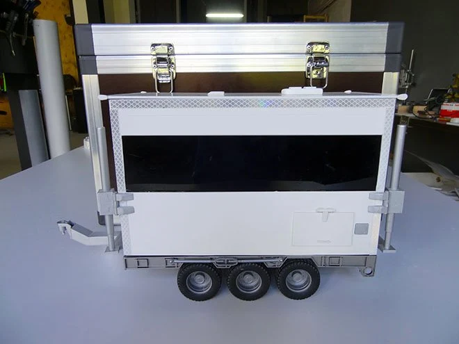
Рассмотреть
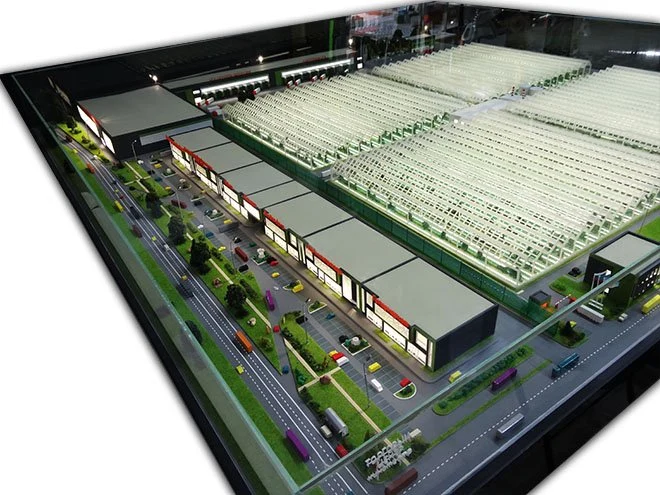
Рассмотреть
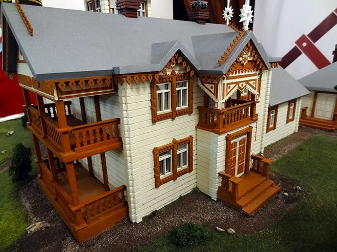
Рассмотреть
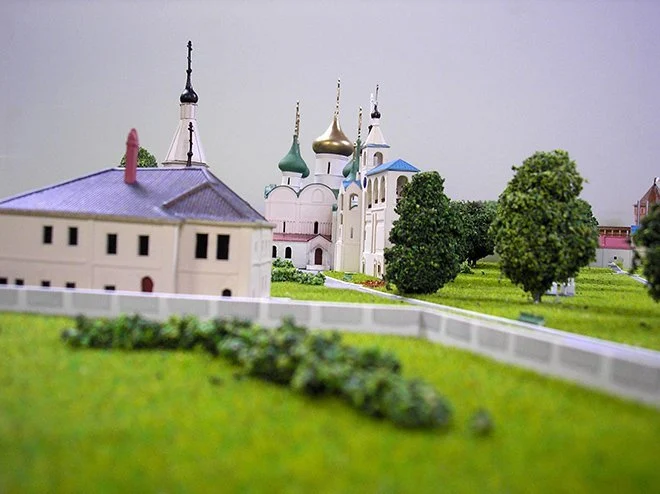
Рассмотреть
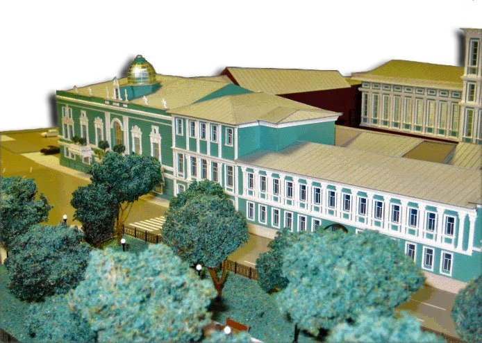
Рассмотреть
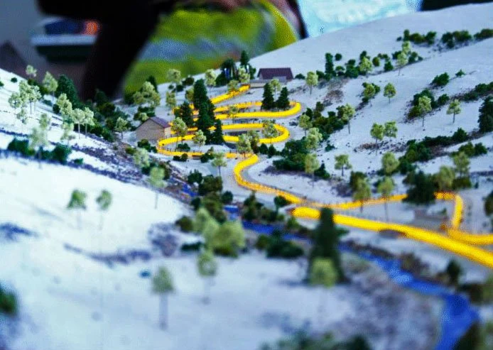
Рассмотреть Рассмотреть
Рассмотреть

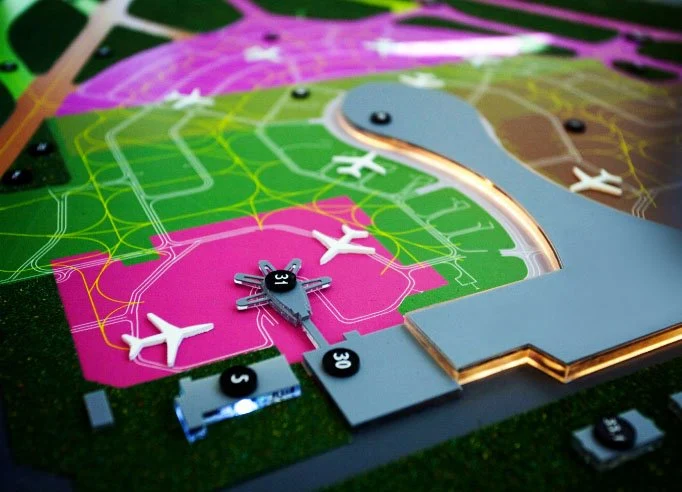
Рассмотреть
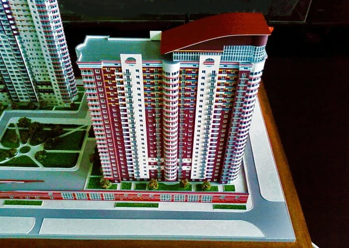
Рассмотреть
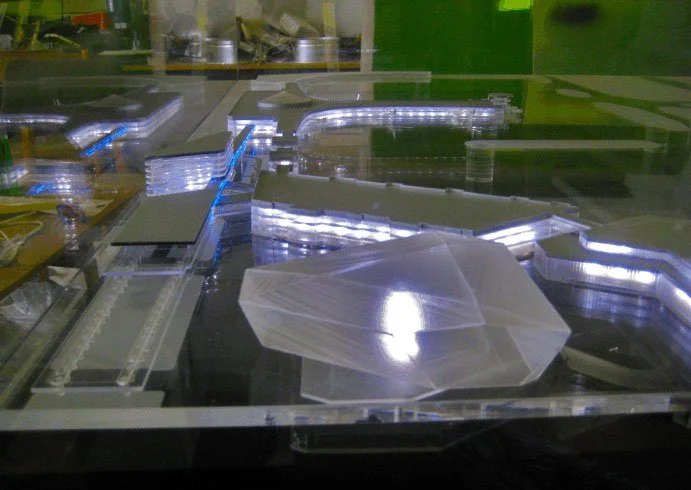
Рассмотреть
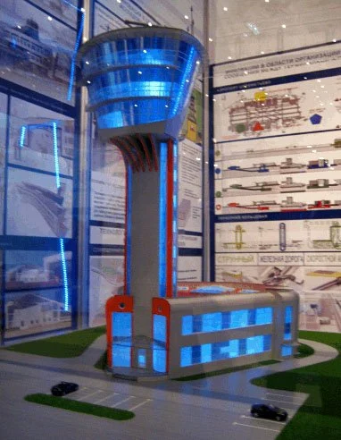
РассмотретьОбсудим вашу задачу
Начнём
с замысла.
Расскажите, что должен показать макет.
Масштаб, материалы и детали обсудим
вместе.
+7 495 640-30-00info@artmaket.moscow
- Офис
- Москва, Мичуринский проспект, 47
- Производство
- Москва, Лужнецкая набережная, 10А, стр. 1
- Время работы
- Понедельник — суббота, 10:00–19:00